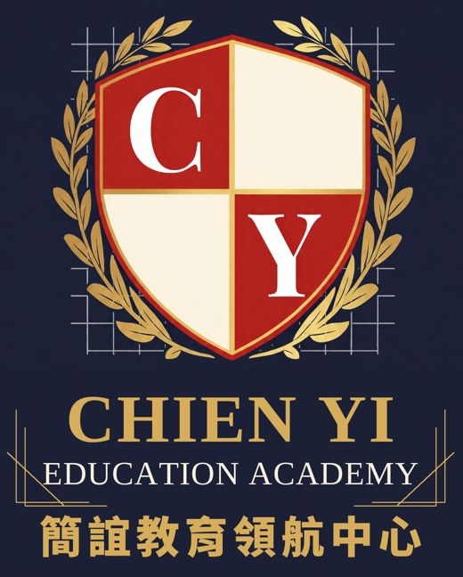
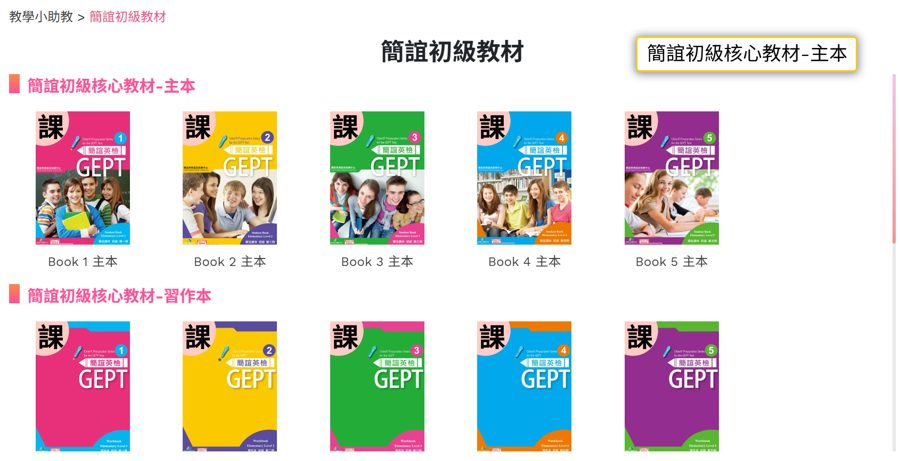

01
英檢主辦單位推 AI 備課與線上練習平台
語言訓練測驗中心（LTTC）今年在台北、台中、台南辦教師研習，主題是用生成式 AI 備課，並介紹新的 GEPT iPrep 線上練習平台，可做模擬題、即時回饋、追蹤學習弱點。
簡誼觀點考試端已經用平台追蹤學習歷程。老師先學會用 AI 準備教材，把時間留給口說與寫作批改。
語言訓練測驗中心（LTTC）今年在台北、台中、台南辦教師研習，主題是用生成式 AI 備課，並介紹新的 GEPT iPrep 線上練習平台，可做模擬題、即時回饋、追蹤學習弱點。
LTTC 公告 2026 年共 25 場公開測驗，並推出 55 歲以上考生的樂齡友善服務。全民英檢成績目前有 29 國、80 多所大學採認。
一場補教經營者論壇指出，少子化讓市場洗牌，家長更在意孩子的學習歷程與成長證據；AI 被定位為分擔重複練習，不是取代老師。
加入官方 LINE「Kelly老師543」，傳送關鍵字 快報 即完成訂閱，每週一早上 8 點送到。
簡誼教育領航中心是簡誼的總部。我們把 17 年在高雄直營校天天使用的英檢課程、教材、平台與營運流程整理成一套系統，提供給想開英檢班的補習班和想精進教學的英文老師。

從全民英檢教材、英檢師資培訓、英檢線上教學平台，到補習班開班輔導。可以從一個模組開始，也可以整套帶回去；每個模組都先在簡誼直營校用過，才拿出來給同業。
小學到中級英檢系列書與題本，分快速版、加強版、初試、複試，老師拿到就能排課。
英檢教學法、口說寫作批改、課堂節奏與考試技巧，結訓可申請簡誼授證教師。
CY Studio 的核心平台：電子教材與上課頁面、教學影片、講義下載、學生健檢報告，作業與 Quiz 秒改。
課程與師資健檢，出一份專業報告，告訴你先改哪裡、怎麼改。
開班規劃、入班檢測、招生說明會素材、營運流程，陪你把第一班開起來。
從新進老師到主任，每一層都有對應的課。上完前四門並通過試教，即可取得簡誼授證教師資格。
課程時數、費用與開課日期，請加 LINE 索取最新梯次。
依經營主體與總部參與程度，簡誼開班體系分為直營校、領航校與合作班三類，皆採用同一套課程、教材與教學標準。
簡誼合作班係由簡誼師培中心培訓並授證之教師，與簡誼直接合作開設之班級，納入簡誼直系開班系統，由總部直接管理。
詳細合作條件以雙方簽訂之合作契約為準。
每個品牌都是一組可以直接開班的課程。領航校與合作班可以選擇需要的品牌帶回去用，並由簡誼師培中心提供對應的兒童美語與英檢師資培訓。
寒暑假營隊與入校合作課程，同樣由簡誼師培中心授證教師帶領。營隊課程也提供給領航校與合作班，直接在自己的補習班開營。
從讀劇本、角色練習到排練與成果公演，讓孩子在演戲中練發音、敢開口、說得清楚。
主題式英文活動結合 STEAM 動手做與英檢小挑戰，一整週都用英文完成任務。
課後英語社團、校園英語營、英檢輔導班與英語教師研習，由授證教師入校授課，課程與教材由總部規劃。
加入官方 LINE「Kelly老師543」後，傳送關鍵字 請聯絡我 由專人回覆營隊與學校合作；想了解開營方式，傳送 開班。家長報名營隊，請直接聯絡附近的直營分校。
英檢線上教學平台與補習班教學系統一次到位。三個平台各管一件事，資料互相銜接；領航校與合作班開通後，老師和學生用同一套帳號上課、做作業、補進度。

CY Studio 的核心。老師備課、上課、出作業都在這裡完成。
系統課程、補課影片與師培中心課程，搭配驗收題、AI 助教和口說情境演練，學習歷程一路累積。
學生用學號登入做作業：口說練習、學習紀錄、老師批改，讓每次練習都有下一步。
英國 Newcastle University 多媒體輔助英語教學碩士、博士。曾任大學應用外語系助理教授，簡誼英檢系列書籍與全台超過 100 家補習班合作。
想看實際上課？可以預約到直營校觀課。
從師資培訓、教材、學生來源到成效報告，開英檢班前先盤點這五項，開班會順很多。
題型背後在考什麼，以及課堂上怎麼講才不會帶錯方向。
用一首歌帶完三個文法點，可以直接拿到課堂用。
簡誼教育領航中心的新聞稿、媒體報導與活動公告。授證典禮、營隊、學校合作等消息都會在這裡發布。
深耕高雄 17 年、擁有 6 所直營校的簡誼，正式成立 CY Academy 簡誼教育領航中心，由誼格教育有限公司營運。中心整合簡誼師培中心、英檢教材、CY Studio 學習平台與開班輔導，以直營校、領航校、合作班三級體系，協助全台補習班與英文老師開設英檢班。
參加師資培訓、合作開班，都從這裡開始。告訴我們你的補習班現況，我們會建議適合的開班方式與第一步。
官方 LINE：Kelly老師543 ID：@255gvcyl
家長請注意此 LINE 為補習班與老師的開班、師訓窗口。家長詢問孩子的課程，請直接聯絡附近的直營分校。